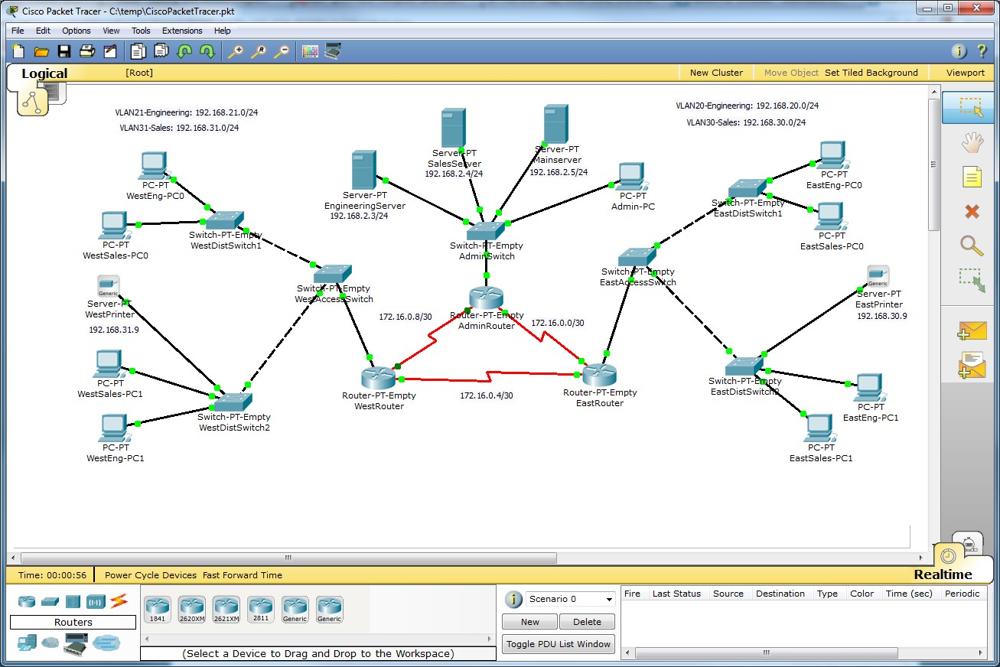

DHEERAJ KUMAR SRIVASTAVA
- Gmail--dksri1996@gmail.com
- Phone--9344711439
- Instagram--dksri1996
- LinkedIn--linkedin.com/in/dheeraj-kumar-srivastava-692874155
GESTURE RECOGNITION
Language used
PythonLibrary
OpenCV
The project has focussed the Difficulties faced
by Blind Peoples while interacting with computer/mobile systems

SECURING AND MANAGING ENTERPRISE CISCO NETWORK
Kvch-IBM Noida
From 1 July 2018 to 29 July 2018
Intership Project
The project has focussed the Difficulties faced
by Blind Peoples while interacting with computer/mobile systems
